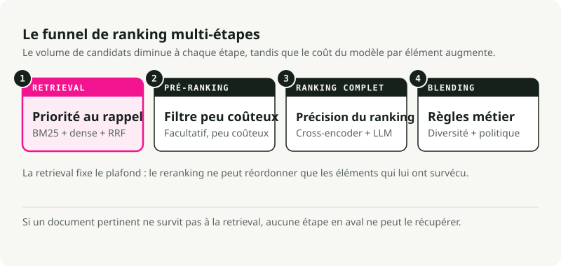
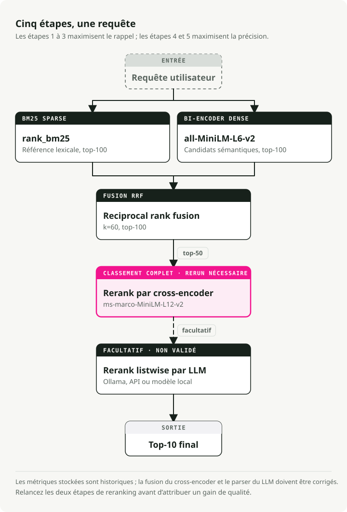
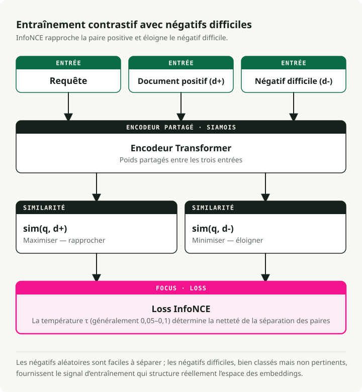
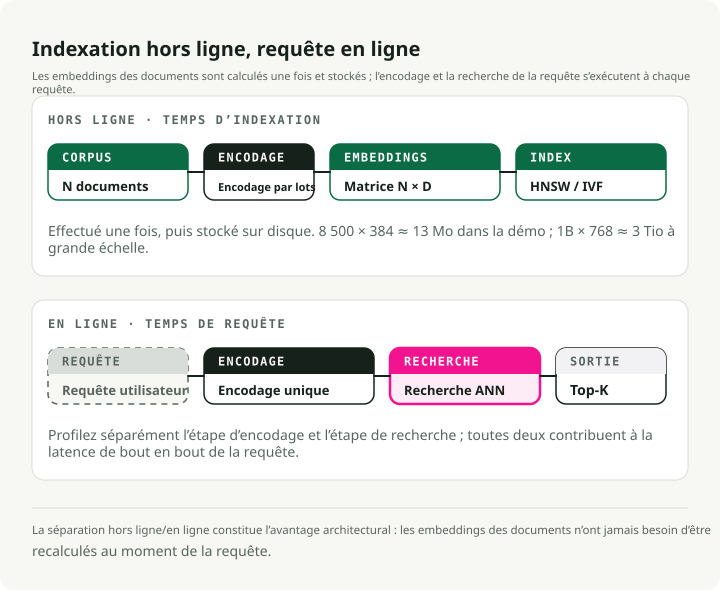
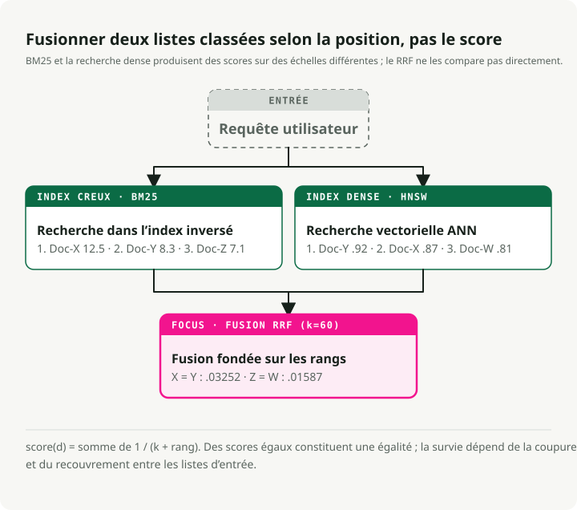
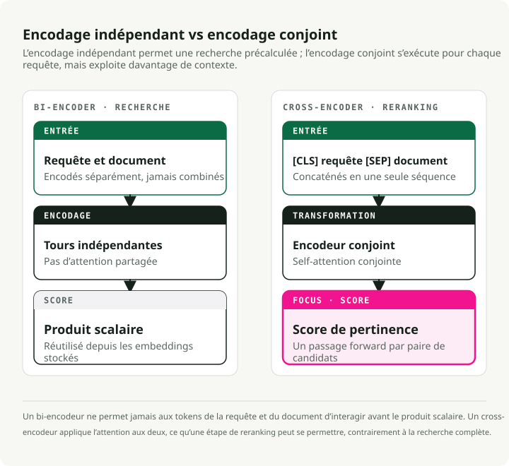
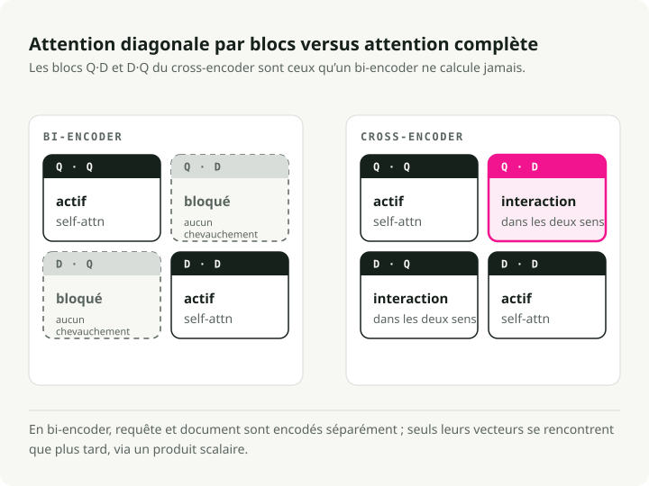
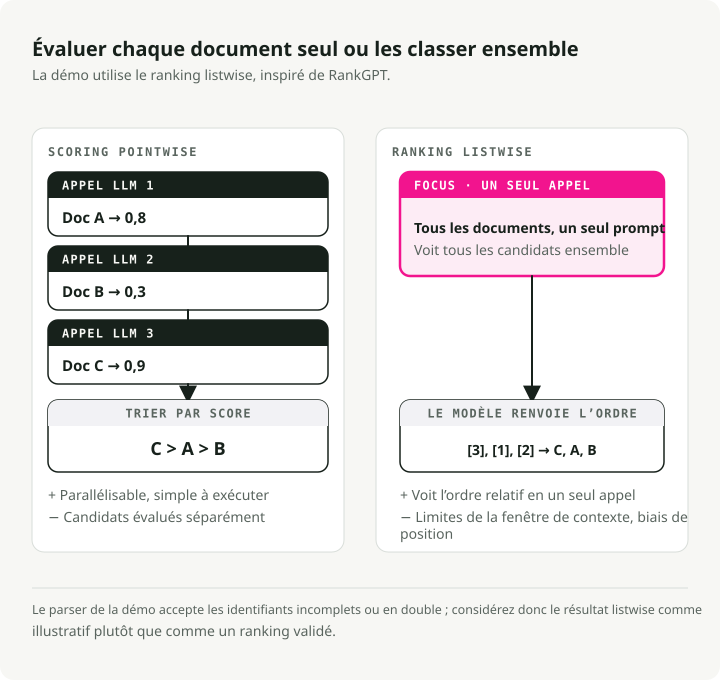
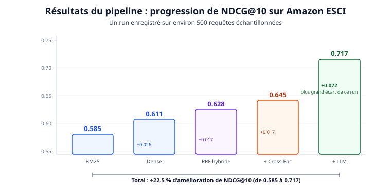
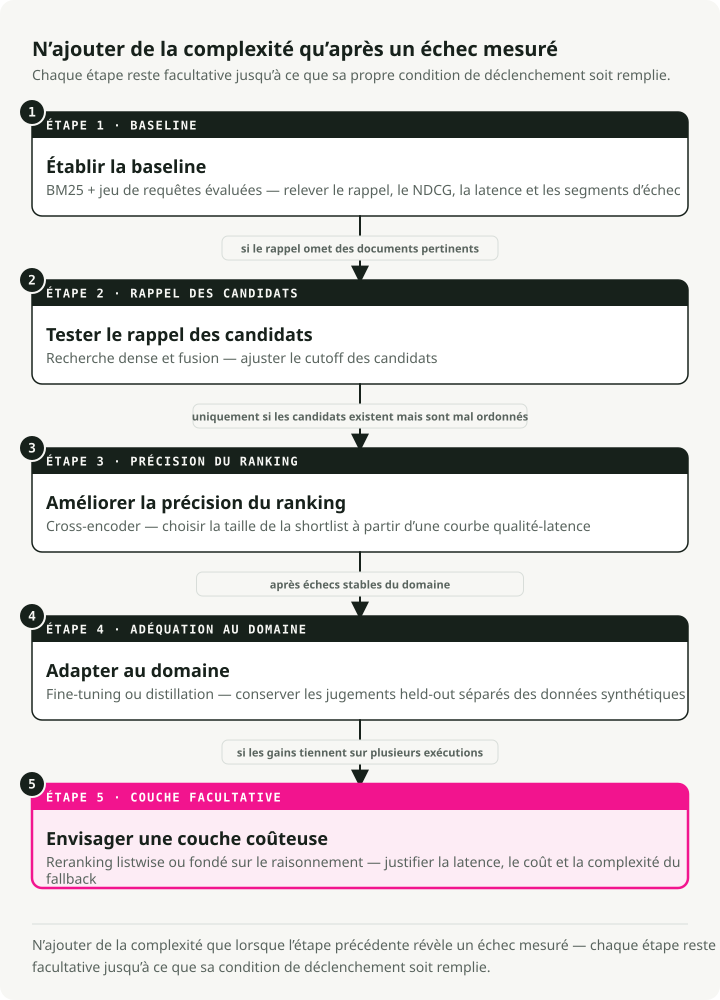

Traduction automatique
Cet article a été traduit automatiquement depuis la version originale en anglais.
Stack de classement pour la recherche en 2026 : BM25, embeddings, cross-encoders et reranking LLM
La recherche a cessé d’être un problème de correspondance de chaînes il y a déjà un moment. Quand quelqu’un saisit « wireless headphones » dans un moteur de recherche produit, il attend plus que des articles contenant ces deux mots. Il veut le meilleur résultat selon la pertinence sémantique, la qualité du produit, les préférences utilisateur et la disponibilité. L’écart entre ce que retourne BM25 et ce que les utilisateurs veulent réellement a changé la façon de construire les systèmes de recherche.
Cet article parcourt un stack moderne de classement pour la recherche : un pipeline multi-étapes combinant récupération sparse avec BM25, embeddings sémantiques denses, reciprocal rank fusion, reranking par cross-encoder et classement listwise par LLM. J’ai construit une démo fonctionnelle qui benchmarke chaque étape sur le dataset de recherche produit Amazon ESCI, afin que la contribution de chaque couche apparaisse dans des chiffres réels.
TL;DR : un pipeline hybride multi-étapes est le choix par défaut compatible production. Exécutez BM25 et la récupération dense en parallèle, fusionnez-les avec Reciprocal Rank Fusion, rerankez les survivants avec un cross-encoder, puis laissez un LLM gérer la couche finale de précision. Sur le benchmark Amazon ESCI, cela donne une amélioration de 22,5 % en NDCG@10 par rapport à BM25 seul (0.585 à 0.717). Le reranker LLM apporte le plus grand saut individuel (+0.072).
Comment on en est arrivé là
Le classement en recherche a traversé trois grandes phases, chacune corrigeant une limite précise de la précédente. Le stack moderne n’a de sens que si l’on comprend le chemin qui y a mené.
BM25 et la récupération lexicale
Pendant des décennies, BM25 a été la solution par défaut. C’est un modèle probabiliste qui score les documents selon la fréquence des termes de la requête dans le document, normalisée par la longueur du document et l’inverse document frequency (IDF).
BM25 est excellent pour la correspondance exacte par mots-clés. Rechercher un code d’erreur précis, un SKU produit ou un code de statut HTTP fonctionne bien car le système n’a besoin que d’un recouvrement littéral des tokens. Le problème est celui du vocabulary mismatch : une requête comme « cheap laptop » passe à côté de documents parlant de « budget notebook computer » parce que les mots ne correspondent pas. BM25 n’a aucune notion d’intention sémantique.
Cela dit, BM25 reste une base solide. Il obtient 0.429 de nDCG@10 moyen sur les 18 datasets du benchmark BEIR et bat encore certains modèles neuronaux sur des tâches de récupération argumentative comme Touche-2020.
Récupération dense et embeddings
BERT et le Transformer ont amené la récupération dense. Au lieu de faire correspondre des mots-clés, on projette à la fois les requêtes et les documents dans un espace vectoriel partagé de grande dimension (en général 768 ou 1024 dimensions). La pertinence devient une similarité cosinus entre deux vecteurs.
L’architecture bi-encoder (ou « two-tower ») traite la requête et le document indépendamment à travers deux tours d’encodeur séparées, produisant des embeddings de taille fixe. Les vecteurs de documents peuvent être pré-calculés et indexés offline, puis récupérés rapidement via des algorithmes Approximate Nearest Neighbor (ANN). Désormais, « cheap laptop » et « budget notebook » se retrouvent proches dans l’espace vectoriel.
Sous le capot, les bi-encoders utilisent une architecture siamoise (Sentence-BERT, Reimers & Gurevych, EMNLP 2019) : les deux tours partagent les mêmes poids Transformer. Chaque tour traite son texte d’entrée, puis applique un mean pooling sur les états cachés au niveau token pour obtenir un unique vecteur de taille fixe (384 ou 768 dimensions sont courantes). Le partage des poids place requêtes et documents dans le même espace sémantique, ce qui rend la similarité cosinus pertinente dès le départ.
Ces modèles sont entraînés avec du contrastive learning, généralement avec la loss InfoNCE. Étant donné un batch de paires (query, positive_document), l’objectif maximise sim(query, positive_doc) tout en minimisant sim(query, negative_docs). Les négatifs proviennent des positifs d’autres requêtes dans le même batch (in-batch negatives). Un paramètre de température \(\\tau\) contrôle le caractère plus ou moins concentré de la distribution : des valeurs plus faibles poussent le modèle à faire des distinctions plus difficiles entre positifs et négatifs.
Le levier principal de performance d’un bi-encoder est la qualité des données d’entraînement. Les modèles démarrent à partir de paires (query, positive_document) issues de jeux de données comme MS MARCO, puis on ajoute des hard negatives — des documents que le modèle actuel classe haut mais qui ne sont en réalité pas pertinents. Les négatifs aléatoires sont trop faciles et n’apprennent rien au modèle. Les hard negatives l’obligent à apprendre des distinctions subtiles. Le framework SimANS (Zhou et al., EMNLP 2022) formalise cela : exclure les négatifs faciles (rang trop bas) et les potentiels faux négatifs (rang trop élevé), et entraîner sur ce « milieu difficile ».
Le coût, c’est le goulet d’étranglement de représentation. Les bi-encoders compressent toute la nuance sémantique dans un unique vecteur de taille fixe, donc ils ratent souvent des interactions fines entre des termes spécifiques de la requête et du contenu spécifique du document.
Cross-encoders et LLMs
Les cross-encoders (Nogueira & Cho, 2019) injectent la requête et le document ensemble dans un Transformer sous forme d’une séquence concaténée ([CLS] Query [SEP] Document), de sorte que chaque token de la requête peut prêter attention à chaque token du document via une self-attention complète. Cette interaction profonde capte des nuances qu’un encodage indépendant manque.
Le reranking par LLM pousse cela plus loin. Un grand modèle de langage agit comme un ranker listwise zero-shot — en pratique, un juge humain capable de raisonner sur pourquoi un document est meilleur qu’un autre. RankGPT (Sun et al., EMNLP 2023 Outstanding Paper) a montré que GPT-4 utilisé comme reranker listwise zero-shot égale ou dépasse des méthodes supervisées.
La précision est forte. Le coût aussi. On ne peut pas pré-calculer les scores, et l’inférence est 100x plus lente qu’une récupération par bi-encoder. C’est ce coût qui impose le schéma architectural des moteurs modernes : l’entonnoir multi-étapes.
L’entonnoir multi-étapes
Exécuter un cross-encoder ou un LLM coûteux sur des millions de documents n’est pas viable, donc les stacks de recherche modernes utilisent un entonnoir. Chaque étape réduit le pool de candidats tandis que la complexité du modèle augmente.
Une recherche mono-étape est soit trop lente (modèles complexes partout), soit trop imprécise (modèles simples partout). L’entonnoir offre un compromis, et c’est l’architecture standard en production à grande échelle.

| Étape | Pool de candidats | Objectif principal | Complexité du modèle | Budget de latence |
|---|---|---|---|---|
| Récupération | 10^9 - 10^12 | Rappel maximal | Faible (BM25, Bi-Encoders) | < 50ms |
| Pré-ranking | 10^4 - 10^5 | Filtrage efficace | Moyenne (Two-Tower, GBDT) | < 100ms |
| Classement | 10^2 - 10^3 | Précision maximale | Élevée (Cross-Encoders, LLMs) | < 500ms |
| Blending | 10^1 - 10^2 | Diversité et sécurité | Règles et multi-objectifs | < 20ms |
La récupération fixe le plafond et le reranking optimise à l’intérieur de ce plafond. Si un document pertinent ne passe pas l’étape de récupération, aucun modèle en aval ne peut le récupérer.
La démo : un pipeline en cinq étapes
Pour rendre cela concret, j’ai construit une démo search-ranking-stack qui exécute un pipeline en cinq étapes sur le benchmark de recherche produit Amazon ESCI. Chaque étape est mesurée indépendamment pour montrer d’où viennent réellement les gains.

Le pipeline :
- BM25 Sparse Retrieval — baseline lexicale (rank_bm25)
- Dense Bi-Encoder Retrieval — recherche sémantique (all-MiniLM-L6-v2)
- Hybrid RRF Fusion — combine les résultats sparse et denses
- Cross-Encoder Reranking — scoring de pertinence fin (ms-marco-MiniLM-L-12-v2)
- LLM Listwise Reranking — classement final piloté par le raisonnement (Ollama / Claude / local)
Les étapes 1--3 constituent l’étape de récupération de l’entonnoir (maximiser le rappel) ; les étapes 4--5 constituent l’étape de classement complet (maximiser la précision). La démo ignore le pré-ranking et le blending. Avec ~8 500 documents, on peut se permettre d’envoyer tous les résultats hybrides directement au reranking.
Démarrage rapide
git clone https://github.com/slavadubrov/search-ranking-stack.git
cd search-ranking-stack
uv sync
# Download and sample ESCI dataset (~2.5GB download, ~5MB sample)
uv run download-data
# Run the full pipeline (without LLM reranking)
uv run run-all
# Run with LLM reranking via Ollama
uv run run-all --llm-mode ollama
Le dataset : Amazon ESCI
La démo utilise le Amazon Shopping Queries Dataset (ESCI) du KDD Cup 2022 — un vrai benchmark de recherche produit avec des labels de pertinence gradués sur quatre niveaux :
| Label | Gain | Signification | Exemple (Requête : « wireless headphones ») |
|---|---|---|---|
| Exact (E) | 3 | Satisfait toutes les exigences de la requête | Sony WH-1000XM5 Wireless Headphones |
| Substitute (S) | 2 | Alternative fonctionnelle | Wired headphones with Bluetooth adapter |
| Complement (C) | 1 | Article connexe utile | Headphone carrying case |
| Irrelevant (I) | 0 | Aucune relation significative | USB charging cable |
La pertinence graduée est importante car elle permet d’utiliser la NDCG (Normalized Discounted Cumulative Gain), qui distingue un classement « parfait » d’un classement « simplement correct ». Les métriques binaires traitent les deux comme également pertinents et ne permettent pas de distinguer différents niveaux de pertinence à une même position.
J’ai échantillonné ~500 requêtes « difficiles » (le flag small_version dans ESCI) avec ~8 500 produits et ~12 000 jugements. Suffisamment petit pour tourner sur un laptop en quelques minutes, suffisamment grand pour fournir des résultats statistiquement significatifs.
Récupération : recherche hybride
Le rôle de la couche de récupération est de maximiser le rappel — lancer le filet le plus large possible pour que rien de pertinent ne passe à travers.
BM25 : la baseline lexicale
BM25 score les documents selon le recouvrement des termes avec la requête, avec saturation de la fréquence des termes et normalisation par la longueur du document :
Où \(\\text{IDF}(t)\) est l’inverse document frequency du terme \(t\), \(tf(t,d)\) est la fréquence du terme dans le document \(d\), \(|d|\) est la longueur du document, et \(\\text{avgdl}\) est la longueur moyenne des documents du corpus. Deux paramètres comptent : \(k_1\) (typiquement 1.2--2.0) contrôle la saturation du TF — à quelle vitesse les répétitions d’un terme cessent d’apporter de la valeur — et \(b\) (typiquement 0.75) contrôle la normalisation par longueur.
L’implémentation est courte. Tokenisation simple par whitespace avec rank_bm25 :
# src/search_ranking_stack/stages/s01_bm25.py
from rank_bm25 import BM25Okapi
def run_bm25(data: ESCIData, top_k: int = 100):
doc_ids = list(data.corpus.keys())
tokenized_corpus = [text.lower().split() for text in data.corpus.values()]
bm25 = BM25Okapi(tokenized_corpus)
results = {}
for query_id, query_text in data.queries.items():
scores = bm25.get_scores(query_text.lower().split())
top_indices = np.argsort(scores)[::-1][:top_k]
results[query_id] = {doc_ids[idx]: float(scores[idx]) for idx in top_indices}
return results
BM25 atteint un Recall@100 de 0.741 — 74 % des produits pertinents apparaissent quelque part dans le top 100. Pas mal pour une méthode purement lexicale, mais 26 % des éléments pertinents sont invisibles pour toutes les étapes downstream.
Dense Bi-Encoder : récupération sémantique
Le bi-encoder projette requêtes et documents indépendamment dans un espace d’embedding partagé :
# src/search_ranking_stack/stages/s02_dense.py
from sentence_transformers import SentenceTransformer
model = SentenceTransformer("sentence-transformers/all-MiniLM-L6-v2")
# Encode corpus once, cache to disk
corpus_embeddings = model.encode(
doc_texts,
batch_size=128,
normalize_embeddings=True, # Cosine sim = dot product
convert_to_numpy=True,
)
# At query time: encode query, compute dot product
query_embeddings = model.encode(query_texts, normalize_embeddings=True)
similarity_matrix = np.dot(query_embeddings, corpus_embeddings.T)
Avec des embeddings normalisés, la similarité cosinus se réduit à un produit scalaire — une seule multiplication de matrices permet de récupérer toutes les requêtes d’un coup. Le modèle all-MiniLM-L6-v2 de 22M paramètres tourne confortablement sur CPU et pousse Recall@100 à 0.825, soit une amélioration de 11 % par rapport à BM25.
Comment les bi-encoders apprennent de bonnes représentations
L’entraînement des bi-encoders se fait généralement en deux phases. D’abord, le modèle est pré-entraîné sur des datasets de Natural Language Inference (NLI) et de Semantic Textual Similarity (STS), qui lui apprennent une compréhension sémantique générale — le modèle apprend que « a cat sits on a mat » et « a feline rests on a rug » doivent avoir des embeddings proches. Ensuite, il est fine-tuné sur des données spécifiques à la récupération comme MS MARCO, où il apprend qu’une requête de recherche et son passage pertinent doivent être plus proches que la requête et des passages non pertinents.
L’ingrédient critique de la seconde phase est le hard negative mining. Les négatifs aléatoires (par exemple, un document sur la cuisine associé à une requête sur des casques audio) sont trivialement faciles à distinguer — le modèle n’en apprend rien. À la place, on utilise le modèle actuel lui-même pour trouver des documents qu’il classe haut alors qu’ils ne sont pas réellement pertinents.
L’approche SimANS (Simple Ambiguous Negatives Sampling) formalise cela : classer tous les documents avec le bi-encoder actuel, puis exclure les négatifs faciles (classés trop bas — le modèle sait déjà les gérer) et les potentiels faux négatifs (classés trop haut — ils peuvent être pertinents mais non annotés). Ce « milieu difficile » produit le signal d’apprentissage maximal.
# What a training triplet looks like after hard negative mining
training_triplet = {
"query": "wireless noise canceling headphones",
"positive": "Sony WH-1000XM5 Wireless Noise Cancelling Headphones",
"negative": "Sony headphone replacement ear pads", # Hard negative: same brand, related product, but wrong intent
}
# The bi-encoder must learn that "ear pads" is NOT what the user wants,
# even though it shares many tokens with the positive document.
La fonction de perte contrastive (InfoNCE) relie tout cela. Pour chaque requête \(q\) avec document positif \(d^+\) et un ensemble de documents négatifs \(\\{d^-_1, \\ldots, d^-_n\\}\) :
Où \(\\text{sim}(q, d)\) est la similarité cosinus entre les embeddings de requête et de document, et \(\\tau\) est le paramètre de température (généralement 0.05--0.1) qui contrôle le caractère plus ou moins concentré de la distribution — des valeurs plus basses rendent la loss plus sensible aux hard negatives. En pratique, c’est une softmax cross-entropy : faire monter la similarité de la paire positive relativement à tous les négatifs. Quand \(\\tau\) est petit, même de faibles différences de similarité produisent de grands gradients, ce qui force le modèle à apprendre des distinctions plus fines.

Servir des embeddings de bi-encoder à l’échelle
L’avantage architectural des bi-encoders est la séparation nette offline/online. Tous les embeddings de documents sont calculés une fois à l’indexation et stockés dans un index vectoriel. Au moment de la requête, seule la requête a besoin d’un unique forward pass dans l’encodeur (~5ms), suivi d’une recherche ANN sur des embeddings pré-calculés (~10ms). C’est cette asymétrie qui rend la récupération dense praticable à grande échelle.
Dans la démo, les chiffres restent modestes : 8 500 documents \(\\times\) 384 dimensions \(\\times\) 4 bytes par float = ~13 MB d’embeddings. À l’échelle production, les chiffres ne sont plus modestes : 1 milliard de documents avec des embeddings en 768 dimensions nécessitent ~3 TiB de stockage. C’est là qu’interviennent la quantification (compression des floats 32 bits en entiers 8 bits), la product quantization (décomposition des vecteurs en sous-espaces), et des index adossés à des SSD comme DiskANN. La section Vector Indexing: HNSW vs. IVF couvre les algorithmes d’index.

Pourquoi l’hybride : BM25 et la recherche dense ont des échecs complémentaires
Aucune des deux méthodes, seule, ne suffit. BM25 gagne sur les noms propres, les SKU produits précis et les codes d’erreur — « iPhone 15 Pro Max 256GB » exige une correspondance exacte des tokens. La récupération dense gagne sur le vocabulary mismatch — faire correspondre « cheap laptop » à « budget notebook computer » exige une compréhension sémantique.
La correction standard est la recherche hybride : exécuter les deux méthodes de récupération en parallèle, puis fusionner les résultats.
Reciprocal Rank Fusion (RRF)
Le défi de la recherche hybride est que BM25 et la récupération dense produisent des scores sur des échelles complètement différentes. Les scores BM25 sont non bornés (0 à 100+), et la similarité cosinus est bornée entre -1 et 1. Une combinaison linéaire simple nécessite un tuning continu pour rester stable.

Reciprocal Rank Fusion (Cormack et al., 2009) abandonne complètement les scores bruts et n’utilise que la position dans le classement :
Où \(k\) est une constante de lissage (typiquement 60) qui atténue la domination des valeurs extrêmes. RRF récompense les éléments qui se classent de manière cohérente près du sommet dans les deux méthodes, même si un système leur attribue un score bien plus élevé que l’autre. En passant à une logique fondée sur le rang, le problème de différence d’échelle disparaît.
L’implémentation :
# src/search_ranking_stack/stages/s03_hybrid_rrf.py
def reciprocal_rank_fusion(ranked_lists, k=60, top_k=100):
fused_results = {}
for query_id in all_query_ids:
rrf_scores = defaultdict(float)
for results in ranked_lists:
sorted_docs = sorted(results[query_id].items(),
key=lambda x: x[1], reverse=True)
for rank, (doc_id, _score) in enumerate(sorted_docs, start=1):
rrf_scores[doc_id] += 1.0 / (k + rank)
sorted_rrf = sorted(rrf_scores.items(),
key=lambda x: x[1], reverse=True)[:top_k]
fused_results[query_id] = dict(sorted_rrf)
return fused_results
Le RRF hybride atteint Recall@100 de 0.842 et NDCG@10 de 0.628 — meilleur que BM25 (0.585) et Dense (0.611) pris séparément. Les documents n’ont besoin d’être bien classés que dans une seule méthode pour survivre à la fusion.
Reranking par cross-encoder
Avec 100 candidats hybrides par requête, on peut se permettre un modèle plus coûteux. Le cross-encoder traite la requête et le document ensemble dans un unique Transformer, avec cross-attention complète entre tous les tokens.

Pourquoi la cross-attention compte
La vraie différence se situe dans la matrice d’attention. Dans un bi-encoder, l’attention est block-diagonal : les tokens de la requête n’assistent qu’aux autres tokens de la requête, et les tokens du document seulement à ceux du document. Les deux représentations ne se rencontrent jamais au niveau token — elles n’interagissent qu’à la fin via un produit scalaire. Un cross-encoder calcule la matrice d’attention complète, où chaque token de la requête peut assister à chaque token du document et inversement. C’est cette cross-attention qui débloque une interaction profonde au niveau token.

Dans un bi-encoder, la requête « apple » produit le même embedding à chaque fois. Elle est encodée indépendamment, avant même qu’un document soit vu. Un cross-encoder voit la requête et le document simultanément, donc il peut lever l’ambiguïté dans le contexte. Les avantages dépassent largement la polysémie :
- Négation : une requête comme « headphones that are not wireless » — les embeddings bi-encoder de « not wireless » sont presque identiques à ceux de « wireless » car la négation déplace à peine le vecteur moyenné. Un cross-encoder voit directement le token « not » assister à « wireless » et score correctement des casques filaires plus haut.
- Qualification : une requête comme « laptop under \\(500 » — la contrainte de prix modifie la pertinence. Un cross-encoder peut faire assister « \\\)500 » au prix mentionné dans la description du produit et vérifier si la contrainte est satisfaite.
L’entrée du cross-encoder est formattée comme [CLS] query tokens [SEP] document tokens [SEP]. [CLS] est un token de classification dont l’état caché final est passé dans une tête linéaire pour produire un unique score de pertinence. Les embeddings de segment distinguent les tokens de la requête de ceux du document, et [SEP] marque la frontière entre les segments.
Comment les cross-encoders sont entraînés
L’entraînement d’un cross-encoder est conceptuellement plus simple que celui d’un bi-encoder. Le modèle reçoit des triplets (query, document, relevance_label) et apprend à prédire le label via un apprentissage supervisé classique — pas besoin de loss contrastive.
# Cross-encoder training data format
training_example = {
"query": "wireless headphones",
"document": "Sony WH-1000XM5 Wireless Headphones",
"label": 1.0, # Relevant
}
# Forward pass: [CLS] hidden state → Linear layer → sigmoid → score
# Loss: binary cross-entropy between predicted score and label
La tête de classification se place au-dessus de l’état caché final du token [CLS] : une unique couche linéaire projette la dimension cachée vers un scalaire, suivie d’une sigmoïde. Pour des labels binaires de pertinence, la binary cross-entropy fonctionne ; pour des labels gradués comme l’échelle à quatre niveaux d’ESCI, une loss MSE fonctionne mieux car elle préserve la relation ordinale entre les grades.
Le hard negative mining est encore plus important pour les cross-encoders que pour les bi-encoders. Les cross-encoders coûtent cher à entraîner — chaque exemple nécessite un forward pass complet sur la séquence concaténée — donc on ne peut pas gaspiller du compute sur des négatifs trivialement faciles. La recette pratique : utiliser un bi-encoder pour récupérer les top-K candidats de chaque requête d’entraînement, puis extraire les hard negatives depuis des plages de rangs spécifiques (par exemple, rangs 10–100). Cela donne au cross-encoder des exemples où distinguer le pertinent du non pertinent exige réellement une interaction profonde au niveau token.
# src/search_ranking_stack/stages/s04_cross_encoder.py
from sentence_transformers import CrossEncoder
model = CrossEncoder("cross-encoder/ms-marco-MiniLM-L-12-v2")
def run_cross_encoder(data, hybrid_results, top_k_rerank=50):
for query_id, query_text in data.queries.items():
candidates = list(hybrid_results[query_id].items())[:top_k_rerank]
# Form (query, document) pairs for joint encoding
pairs = []
doc_ids = []
for doc_id, _ in candidates:
doc_text = data.corpus.get(doc_id, "")[:2048]
pairs.append([query_text, doc_text])
doc_ids.append(doc_id)
# Score all pairs with full cross-attention
scores = model.predict(pairs, batch_size=64)
# Rerank by cross-encoder score
scored_docs = sorted(zip(doc_ids, scores),
key=lambda x: x[1], reverse=True)
reranked_results[query_id] = {
doc_id: float(score) for doc_id, score in scored_docs
}
Le modèle ms-marco-MiniLM-L-12-v2 de 33M paramètres prend en moyenne environ 100ms par requête sur CPU pour 50 candidats. La NDCG@10 passe à 0.645 — un solide +0.017 par rapport à la récupération hybride.
Le compromis vitesse-qualité
Pourquoi ne pas utiliser des cross-encoders partout ? Parce que le pré-calcul est impossible. Les embeddings de documents d’un bi-encoder sont indépendants de la requête, donc on les calcule une fois et on les stocke. La sortie d’un cross-encoder dépend à la fois de la requête et du document ensemble. Le score de pertinence pour « wireless headphones » associé à un produit Sony provient de la cross-attention complète entre ces tokens précis. On ne peut ni le mettre en cache ni le réutiliser pour une autre requête.
La différence de coût est nette. Une récupération par bi-encoder nécessite 1 forward pass (pour encoder la requête) plus N produits scalaires contre des embeddings de documents pré-calculés — ces produits scalaires sont trivialement peu coûteux. Un cross-encoder nécessite N forward passes complets de Transformer, chacun traitant la séquence concaténée requête + document avec un coût en \(O(L^2)\) pour une longueur combinée de séquence \(L\). Pour 50 candidats avec une longueur moyenne de 128 tokens, cela représente 50 forward passes distincts à travers 12 couches Transformer. À 100 000 candidats, on parle de minutes sur un GPU moderne contre ~17ms pour un bi-encoder.
La règle confirmée par la démo : Recall@100 reste plat à 0.842 sur les deux étapes de reranking. Le reranking peut réordonner les résultats mais jamais ajouter des documents. La récupération fixe le plafond.
Reranking listwise par LLM
La dernière étape utilise un LLM pour un reranking listwise. Au lieu de scorer chaque document indépendamment (pointwise), le LLM voit les 10 meilleurs résultats d’un coup et produit un classement complet. Cette approche, inspirée de RankGPT, permet au modèle de comparer les produits entre eux — ce que les modèles pointwise ne peuvent pas faire.

Le prompt listwise
Le template de prompt demande au LLM de tenir compte de la hiérarchie de pertinence ESCI :
# src/search_ranking_stack/stages/s05_llm_rerank.py
def _create_listwise_prompt(query, documents, max_words=200):
n = len(documents)
doc_texts = []
for i, (doc_id, doc_text) in enumerate(documents, start=1):
words = doc_text.split()[:max_words]
doc_texts.append(f"[{i}] {' '.join(words)}")
return (
f"I will provide you with {n} product listings, each indicated by "
f"a numerical identifier [1] to [{n}]. Rank the products based on "
f'their relevance to the search query: "{query}"\n\n'
"Consider:\n"
"- Exact matches should rank highest\n"
"- Substitutes should rank above complements\n"
"- Irrelevant products should rank lowest\n\n"
f"{chr(10).join(doc_texts)}\n\n"
"Output ONLY a comma-separated list of identifiers: [3], [1], [2], ...\n"
"Do not explain your reasoning."
)
Trois modes d’exécution
La démo prend en charge trois backends pour le reranking LLM :
| Mode | Modèle | Mode d’exécution |
|---|---|---|
ollama |
llama3.2:3b (configurable) |
Local via Ollama API |
api |
claude-haiku-4-5-20251001 |
API Anthropic |
local |
Qwen/Qwen2.5-1.5B-Instruct |
HuggingFace Transformers |
Parsing et fallback
Les sorties de LLM ne sont pas déterministes, donc un parsing robuste et un chemin de fallback sont essentiels :
def _parse_ranking(output: str, n: int) -> list[int] | None:
"""Parse LLM output to extract ranking order."""
matches = re.findall(r"\[(\d+)\]", output)
if not matches:
return None
positions = [int(m) - 1 for m in matches]
# Pad with remaining positions if LLM returned partial output
if len(positions) < n:
seen = set(positions)
for i in range(n):
if i not in seen:
positions.append(i)
return positions[:n]
Si le parsing échoue complètement, le système retombe sur l’ordre du cross-encoder. Toute intégration LLM en production a besoin de ce type de fallback — il ne faut pas qu’un échec de parsing dégrade les résultats en dessous de l’étape précédente.
Résultats : chaque étape justifie sa place
Voici les résultats de l’exécution du pipeline complet sur ~500 requêtes ESCI :

| Étape | NDCG@10 | MRR@10 | Recall@100 | Delta NDCG |
|---|---|---|---|---|
| BM25 | 0.585 | 0.812 | 0.741 | -- |
| Dense Bi-Encoder | 0.611 | 0.808 | 0.825 | +0.026 |
| Hybrid (RRF) | 0.628 | 0.834 | 0.842 | +0.017 |
| + Cross-Encoder | 0.645 | 0.860 | 0.842 | +0.017 |
| + LLM Reranker | 0.717 | 0.901 | 0.842 | +0.072 |
Observations clés
La recherche hybride bat chaque méthode prise isolément. La NDCG RRF (0.628) dépasse à la fois BM25 (0.585) et Dense (0.611). La récupération sparse et dense ont des modes d’échec complémentaires, et les combiner permet de récupérer des documents que chacune raterait seule.
Le rappel est fixé au moment de la récupération. Recall@100 reste stable à 0.842 à travers les deux étapes de reranking. Les rerankers réordonnent, ils n’ajoutent pas de documents. Si vous voulez plus de rappel, corrigez la couche de récupération.
Le reranker LLM apporte le plus grand saut individuel. Le gain de +0.072 en NDCG@10 entre le cross-encoder et le reranker LLM est la plus forte amélioration mono-étape du pipeline. Le LLM peut raisonner sur la pertinence produit — comprendre par exemple qu’un « wireless headphone stand » est un complément, pas un match — et c’est exactement le type de discrimination que les modèles statistiques ratent.
Dense bat BM25 sur ce dataset. Le domaine de la recherche produit ESCI souffre d’un vocabulary mismatch sévère (les utilisateurs disent « cheap laptop » ; les produits disent « budget notebook computer »), ce qui favorise la récupération sémantique.
Évaluation : mesurer ce qui compte
La démo utilise trois métriques complémentaires. Chacune observe le classement sous un angle différent :
NDCG@10 (métrique principale)
Le Normalized Discounted Cumulative Gain mesure la qualité du top-10 en utilisant la pertinence graduée. Il récompense le placement des documents très pertinents en haut avec une décote logarithmique :
La NDCG est la seule métrique qui exploite pleinement la pertinence graduée sur quatre niveaux d’ESCI — un système qui place un match Exact en position 1 score plus haut qu’un système qui place un Substitute à cette position. C’est pourquoi c’est la métrique principale pour la qualité globale de la recherche.
MRR@10 (expérience utilisateur)
Le Mean Reciprocal Rank mesure à quelle vitesse l’utilisateur trouve le premier résultat pertinent. Si le premier résultat pertinent est en position 1, MRR = 1.0. En position 3, le reciprocal rank est 0.333. Cela capture le « time to satisfaction » — même si la NDCG est élevée, ce qui compte d’abord pour l’utilisateur est le premier bon résultat.
Recall@100 (couverture de récupération)
Le rappel mesure quelle fraction de tous les documents pertinents apparaît quelque part dans le top-100. C’est une métrique plafond — si un document pertinent n’est pas récupéré, aucun reranker ne peut le corriger.
Indexation vectorielle : HNSW vs. IVF
Les embeddings denses ne deviennent utiles à grande échelle qu’avec un index Approximate Nearest Neighbor (ANN). La démo utilise une similarité cosinus en force brute (ce qui est acceptable à ~8 500 documents), mais les systèmes de production ont besoin d’index spécialisés.
HNSW (Hierarchical Navigable Small World)
HNSW (Malkov & Yashunin, 2016) est un choix courant pour les environnements de production nécessitant une latence inférieure à 100ms. Il construit un graphe multi-couches où les couches hautes fournissent des connexions « express » pour une navigation grossière et les couches basses des connexions denses pour un raffinement précis. Paramètres de tuning clés : M (connexions par nœud, typiquement 16–64) et efSearch (largeur de faisceau au moment de la requête — utiliser au moins 512 pour des cibles de rappel supérieures à 0.95).
La faiblesse de HNSW est le problème des tombstones : quand des enregistrements sont supprimés, ils laissent des nœuds fantômes dans le graphe. Avec le temps, cela crée des régions inaccessibles, ce qui masque de fait une partie des données à la recherche. Ce n’est pas un problème théorique — même des bases vectorielles modernes comme Qdrant, qui utilise exclusivement HNSW, signalent une dégradation de la qualité de recherche après de nombreuses suppressions, nécessitant des reconstructions complètes de l’index. Si votre dataset subit des mises à jour ou suppressions fréquentes, prévoyez une réindexation périodique ou envisagez des alternatives basées sur IVF.
IVF (Inverted File)
Les index IVF partitionnent l’espace vectoriel en cellules de Voronoï à l’aide de clustering k-means. Au moment de la requête, seules les grappes nprobe les plus proches du centroïde de la requête sont scannées. IVF est plus économe en mémoire et plus résilient sur des datasets dynamiques — les suppressions sont propres, sans nœuds inaccessibles. Les temps de build sont 4x à 32x plus rapides que HNSW.
Pour les échelles extrêmes, IVF_RaBitQ (Gao & Long, SIGMOD 2024) compresse les vecteurs flottants en représentations sur un seul bit. En grande dimension, le signe d’une coordonnée (+/-) porte suffisamment d’information angulaire pour calculer la similarité.
| Caractéristique | HNSW (Graphe) | IVF (Clusters) |
|---|---|---|
| Vitesse requête | Exceptionnelle | Modérée |
| Vitesse de build | Lente | Rapide (4x-32x plus rapide) |
| Mémoire | Élevée (limitée par la RAM) | Faible |
| Suppressions | Problématiques (tombstones) | Propres |
| Idéal pour | Statique, critique en latence | Dynamique, contraint en mémoire |
Conseil pratique issu de Uber : ils ont optimisé la récupération ANN en réduisant le paramètre K de recherche au niveau shard de 1 200 à 200, obtenant une réduction de latence de 34 % et une économie CPU de 17 % avec un impact minimal sur le rappel.
La couche LLM : au-delà du reranking
Les LLMs ne se contentent pas d’améliorer l’étape de reranking. Ils transforment aussi le reste du pipeline de recherche.
Compréhension de requête
L’expansion et la reformulation de requêtes pilotées par LLM attaquent le vocabulary mismatch avant même que la récupération ne commence. Query2doc (Wang et al., EMNLP 2023) génère des pseudo-documents via du prompting few-shot de LLM et les concatène aux requêtes originales, obtenant 3–15 % d’amélioration BM25 sur MS MARCO sans aucun fine-tuning. Le LLM « remplit » le vocabulaire que la requête concise de l’utilisateur laisse implicite.
Motifs pratiques : expansion d’abréviations, enrichissement d’entités, décomposition en sous-requêtes pour le raisonnement multi-hop, et RAG-Fusion — génération de multiples variantes de requêtes et combinaison des résultats via RRF.
LLM-as-a-judge pour l’évaluation
Les LLMs sont maintenant la solution par défaut pour l’évaluation de la qualité de recherche dans beaucoup d’organisations. Le framework TALEC atteint plus de 80 % de corrélation avec les jugements humains en utilisant des critères d’évaluation spécifiques au domaine. L’approche de Pinterest mérite lecture : Llama-3-8B est le teacher offline qui génère des labels de pertinence sur cinq niveaux sur des milliards d’impressions de recherche, surpassant multilingual BERT-base de 12,5 % en précision ; ces labels sont ensuite distillés dans des modèles légers de production.
Ce qui rend l’évaluation par LLM plus fiable :
- Prompter les modèles pour expliquer leurs notes (cela améliore nettement l’alignement humain)
- Utiliser des panels de modèles divers pour réduire la variabilité (« replacing judges with juries »)
- Prendre en compte le biais de tendance centrale dans les labels générés par LLM
Distillation de connaissances
Exécuter un LLM complet pour chaque requête coûte trop cher. La solution est la distillation :
- Utiliser un LLM puissant (le teacher) pour reranker des milliers de requêtes d’entraînement
- Entraîner un petit cross-encoder rapide (le student, ~100M–200M paramètres) à imiter la distribution de classement du LLM
- Résultat : des performances proches du LLM avec une latence d’environ 10ms
InRanker distille MonoT5-3B en modèles de 60M et 220M paramètres — une réduction de taille de 50x avec des performances compétitives. L’approche Rank-Without-GPT produit des rerankers listwise open source de 7B qui atteignent 97 % de l’efficacité de GPT-4 grâce à un fine-tuning QLoRA.
Note d’optimisation des coûts issue de ZeroEntropy : reranker 75 candidats puis n’envoyer que les 20 meilleurs à GPT-4o réduit les coûts API de 72 % — de 162K\(/jour à 44K\)/jour à 10 QPS — tout en conservant 95 % de la précision des réponses.
Personnalisation : l’identité du chercheur compte
La pertinence générique a ses limites. Une recherche sur « apple » devrait renvoyer des iPhones pour un passionné de tech et des recettes à base de pommes pour quelqu’un qui consulte du contenu culinaire.
Modèles two-tower pour la personnalisation
Une architecture de récupération courante pour la personnalisation utilise un modèle d’embedding two-tower : la tour requête encode les requêtes de recherche plus le profil utilisateur en embeddings ; la tour item encode les items plus leurs métadonnées. La similarité par produit scalaire décide de la pertinence, ce qui maintient le système dans une zone ANN sous les 100ms.
Airbnb a été pionnier sur les embeddings d’annonces avec un entraînement de type Word2Vec sur des sessions de clics — leurs canaux Search et Similar Listings réunis génèrent 99 % des conversions de réservation. OmniSearchSage de Pinterest (WWW 2024) apprend conjointement des embeddings unifiés de requêtes, pins et produits, produisant >8 % d’amélioration de pertinence à 300K requêtes/seconde. Les Two-Tower Embeddings d’Uber alimentent la récupération de Eats Homefeed en ~100ms.
Position bias : la distorsion silencieuse
Les utilisateurs cliquent davantage sur les éléments mieux classés indépendamment de leur vraie pertinence, ce qui crée une boucle de rétroaction auto-renforçante. La correction de production la plus pratique (PAL, Guo et al., RecSys 2019) : inclure la position comme feature d’entraînement, puis fixer position=1 pour tous les items au serving. Cela débiaise le modèle sans avoir besoin de modéliser explicitement la distribution de clics.
Combler l’écart de domaine
Une erreur fréquente en stratégie de recherche consiste à supposer qu’un modèle entraîné sur des données web générales (comme MS MARCO) fonctionnera bien sur un domaine spécialisé. C’est le problème out-of-domain (OOD).
Génération de données synthétiques
Les LLMs résolvent la rareté des données annotées via le Generative Pseudo-Labeling (GPL, InPars) :
- Prenez votre corpus de documents spécifique au domaine
- Promptez un LLM avec « Generate a search query that this document would answer »
- Utilisez les paires synthétiques (query, document) pour fine-tuner votre retriever et votre reranker
Cette technique a produit des gains spectaculaires sur des tâches spécifiques à un domaine où les requêtes réelles sont rares. C’est le pont pratique entre le niveau 2 et le niveau 3 sur la courbe de maturité.
RMSC : soft tokens pour l’adaptation de domaine
La stratégie RMSC (Robust Multi-Supervision Combining) introduit des soft tokens — des tokens de domaine [S1], [T1] et des tokens de pertinence [H1], [W1] — qui indiquent au modèle quel domaine il traite et à quel point le signal de supervision est fiable. L’entraînement avec ces tokens stocke la connaissance spécifique au domaine dans les embeddings de tokens au lieu d’écraser les paramètres du backbone principal.
La trajectoire de maturité pratique
Si vous construisez ce stack aujourd’hui, ne commencez pas par l’architecture la plus complexe. Suivez plutôt cette courbe de maturité :

Niveau 1 (baseline) : Postgres pgvector ou Elasticsearch. Recherche hybride avec BM25 + récupération vectorielle. Pas de reranker.
Niveau 2 (le reranker) : ajoutez un cross-encoder (par exemple, bge-reranker-v2-m3 ou ms-marco-MiniLM-L-12-v2) pour reranker les 50 meilleurs résultats. C’est généralement le meilleur ROI pour le moins d’effort. Le modèle Elastic Rerank (184M paramètres, DeBERTa v3) atteint 0.565 de nDCG@10 moyen sur BEIR — une amélioration de 39 % par rapport à BM25.
Niveau 3 (fine-tuning) : fine-tunez votre modèle d’embedding et votre reranker sur des données de domaine avec des requêtes synthétiques générées par LLM (GPL/InPars). C’est là que les performances spécifiques au domaine commencent à se détacher des modèles génériques.
Niveau 4 (state of the art) : ajoutez un reranking listwise par LLM pour les 5–10 meilleurs résultats et injectez des signaux de personnalisation. Expérimentez avec des rerankers fondés sur le raisonnement comme Rank1, qui génère des chaînes de raisonnement explicites avant de juger la pertinence.
Le niveau 2 est le sweet spot pour la plupart des équipes. Ajouter un reranker cross-encoder à une configuration hybride existante peut améliorer fortement la précision sans refonte architecturale.
La frontière : rerankers par raisonnement et recherche agentique
Deux tendances définissent la direction actuelle de la recherche.
Rerankers fondés sur le raisonnement
Rank1 entraîne des modèles de reranking à générer des chaînes de raisonnement explicites avant de juger la pertinence, inspiré par DeepSeek-R1 et OpenAI o1. Il distille à partir de plus de 600 000 exemples de traces de raisonnement et atteint l’état de l’art sur le benchmark de raisonnement BRIGHT — parfois avec une amélioration de 2x par rapport à des rerankers de même taille. Rank1-0.5B obtient des performances comparables à RankLLaMA-13B tout en étant 25x plus petit.
Implication pratique : les requêtes exigeant beaucoup de raisonnement (recherche juridique, littérature scientifique, recherche produit complexe) bénéficient fortement du scaling du compute à l’inférence dans les rerankers.
Recherche agentique
Search-o1 (EMNLP 2025) permet à des modèles de raisonnement (en particulier QwQ-32B) de générer de manière autonome des requêtes de recherche lorsqu’ils rencontrent une connaissance incertaine en plein raisonnement, avec une amélioration moyenne de 23,2 % en exact match par rapport au RAG standard sur des benchmarks de QA multi-hop. La recherche devient de plus en plus un outil qu’utilisent dynamiquement les agents IA, et non plus un produit autonome.
Points clés à retenir
-
La recherche hybride est le choix par défaut. Les preuves empiriques sur les benchmarks comme en production sont cohérentes, et chaque base vectorielle majeure la supporte maintenant nativement. La démo montre un RRF NDCG (0.628) supérieur à BM25 (0.585) et Dense (0.611).
-
La récupération fixe le plafond, le reranking optimise à l’intérieur. Recall@100 reste stable à 0.842 à travers les deux étapes de reranking. Investissez d’abord dans la qualité de la récupération.
-
Ajouter un cross-encoder est le changement unitaire au plus fort ROI pour la plupart des équipes. Même un petit cross-encoder rerankant 50 documents apporte un vrai gain de NDCG. Commencez par là.
-
Le reranking listwise par LLM apporte le plus grand saut de qualité (+0.072 en NDCG@10 dans la démo), mais au prix de la latence et du compute. Utilisez-le de façon sélective, sur le top-10 final.
-
La distillation de connaissances rend le reranking de qualité LLM praticable. Les capacités des grands modèles sont compressées vers des tailles déployables en quelques mois. Un modèle 7B peut atteindre 97 % de l’efficacité de reranking de GPT-4.
-
C’est le stack, pas un modèle isolé, qui détermine la qualité en production. Optimisez le pipeline — l’interaction entre récupération, fusion et reranking — pas seulement un composant.
Le code complet du pipeline est sur github.com/slavadubrov/search-ranking-stack. Clonez-le, exécutez-le, remplacez les modèles et paramètres, et observez les chiffres par vous-même.
Références
Articles scientifiques
- Reciprocal Rank Fusion — Cormack et al., 2009
- RankGPT: LLMs as Zero-Shot Listwise Rerankers — Sun et al., EMNLP 2023 Outstanding Paper
- Rank1: Reasoning-Based Reranking — Weller et al., COLM 2025
- SCaLR: Self-Calibrated Listwise Reranking — Framework de reranking listwise auto-calibré
- GCCP: Global-Consistent Comparative Pointwise — Gestion de la calibration dans le classement LLM pointwise
- Rank-DistiLLM: Knowledge Distillation for Reranking — Schlatt et al., ECIR 2025
- Query2doc: LLM Query Expansion — Wang et al., EMNLP 2023
- GPL: Generative Pseudo Labeling — Adaptation de domaine pour la récupération dense
- InRanker: Distilled Reranker — Réduction de taille 50x avec performances compétitives
- Search-o1: Agentic Retrieval — EMNLP 2025
- TALEC: LLM-as-a-Judge for Search — Framework d’évaluation
- RMSC: Soft Tokens for Domain Adaptation — Combinaison multi-supervision
- BEIR Benchmark — Thakur et al., NeurIPS 2021
- Sentence-BERT — Reimers & Gurevych, EMNLP 2019
- InfoNCE / CPC — van den Oord et al., 2018
- SimANS: Hard Negative Sampling — Zhou et al., EMNLP 2022
- Passage Reranking with BERT — Nogueira & Cho, 2019
- HNSW — Malkov & Yashunin, 2016
- DiskANN — Subramanya et al., NeurIPS 2019
- RaBitQ — Gao & Long, SIGMOD 2024
- Replacing Judges with Juries — Verga et al., 2024
- RAG-Fusion — Rackauckas, 2024
- InPars — Bonifacio et al., SIGIR 2022
- BRIGHT Benchmark — Su et al., ICLR 2025
- Rank-without-GPT — Zhang et al., ECIR 2025
- Pinterest LLM Search Relevance — Wang et al., 2024
- OmniSearchSage — Agarwal et al., WWW 2024
- PAL: Position-bias Aware Learning — Guo et al., RecSys 2019
Datasets et benchmarks
- Amazon ESCI: Shopping Queries Dataset — KDD Cup 2022
- BEIR: Benchmarking IR — Benchmark hétérogène pour l’évaluation zero-shot
- MTEB: Massive Text Embedding Benchmark — Leaderboard des modèles d’embedding
- ESCI Paper — Reddy et al., 2022
Modèles utilisés dans la démo
- all-MiniLM-L6-v2 — Bi-encoder de 22M paramètres
- ms-marco-MiniLM-L-12-v2 — Cross-encoder de 33M paramètres
- Sentence-Transformers — Framework de modèles de récupération neuronale
Outils et plateformes
- rank_bm25 — Implémentation BM25 en Python
- pytrec_eval — Toolkit d’évaluation TREC
- Elasticsearch — Recherche hybride avec Retrievers API
- Vespa — Moteur unifié de recherche et recommandation
- Weaviate — Base de données vectorielle avec recherche hybride
- Qdrant — Base de données vectorielle avec requêtes multi-étapes
Références industrielles
- Airbnb Listing Embeddings — Grbovic & Cheng, KDD 2018
- Uber Delivery Search — Uber Engineering, 2025
- Uber Two-Tower Embeddings — Uber Engineering, 2023
- Elastic Rerank — Elastic, 2024
- ZeroEntropy Reranking Guide — ZeroEntropy, 2025
Projet de démonstration
- search-ranking-stack — Démo fonctionnelle avec tout le code de cet article